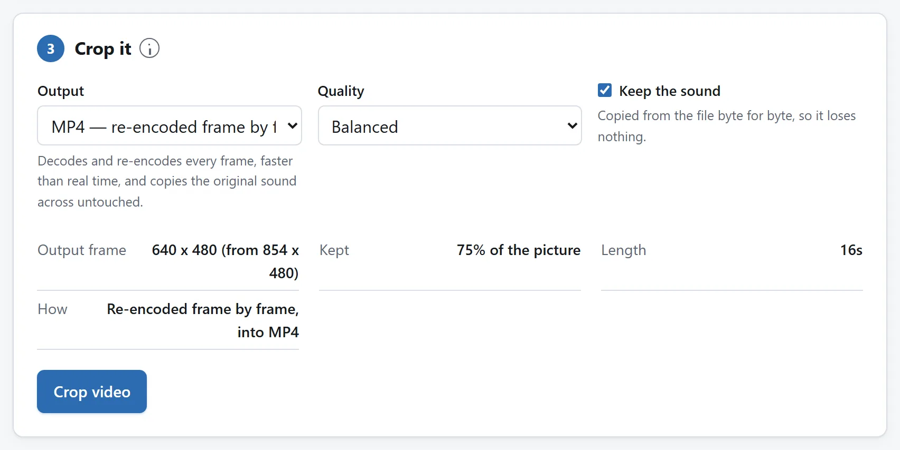
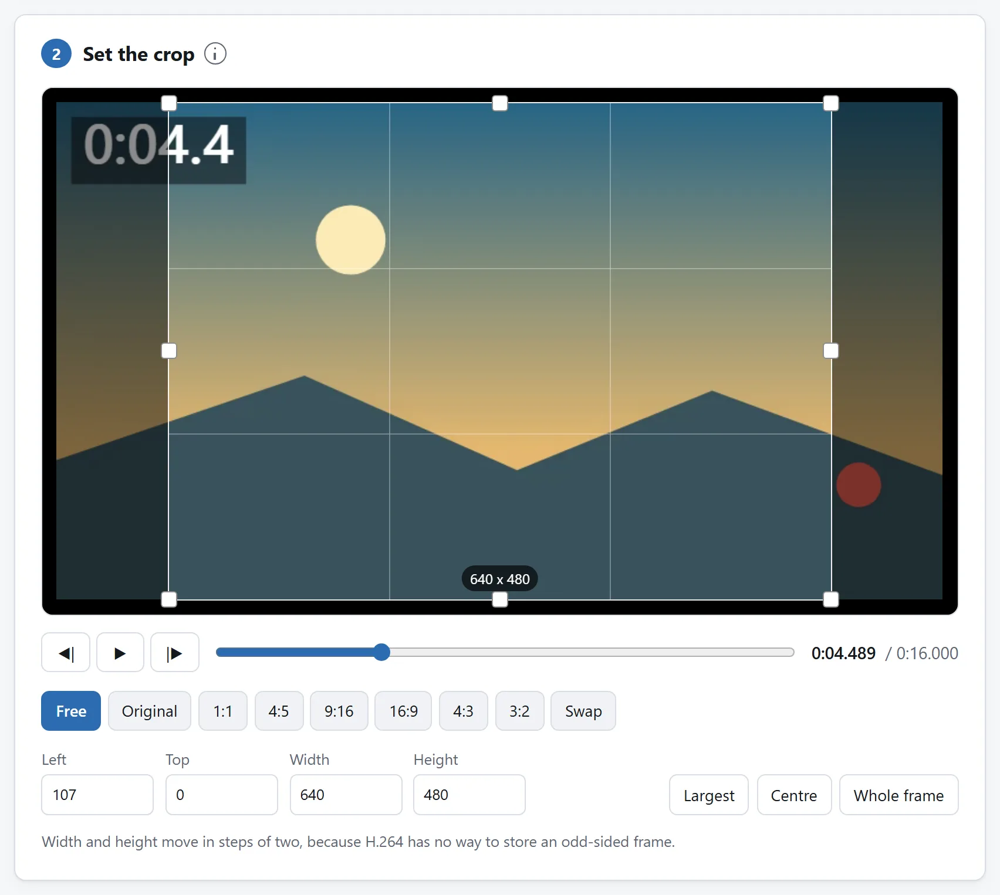

先说结论
打开视频裁剪，把片子丢进去，在要留的那块上拉个框，人家指定了比例的话就锁一个形状，然后导出。出来的片子跟进去的一样长，时间轴和声音原封不动。
跟剪时长不同，这件事必须写出新的帧。这不是哪个工具的短处，裁剪本身就是这么回事。这一页剩下的部分，讲的是它的代价，以及怎么把这笔代价压小。
留下整段动作，不只看一帧中央
竖版产品片或方形家庭片先锁定比例，把框移到主体。导出前播放全片，尤其开头和结尾：暂停时在框内的脸、手或字幕，下一刻可能移出。裁剪框固定不动，不会追踪主体。
教程可裁到应用窗口或演示的工作台区域。保留解释动作的菜单、光标和工具，按实际观看尺寸检查导出件。裁剪只删除外围画面，不会放大细字、加模糊背景，也不能隐藏仍在框内的内容。
为什么裁剪躲不开重新编码
剪时长留下的是一整帧一整帧的画面，所以好的剪切工具把它们原样搬过去，全程连解码都没有。而裁剪留下的是每一帧的一部分，一帧的一部分，那就是另一张图了。要存另一张图，就没法不把像素重写一遍。
有一个很窄的例外，值得知道，好让你听见有人这么宣称时认得出来。视频是按块编码的，如果一个裁剪框四条边正好都落在块的边界上，理论上有些数据是可以复用的。可实际上，帧自身的尺寸、运动矢量和预测反正都得重写，所以现实里没有哪个东西是这么做出来的。就当裁剪一定意味着重新编码。
一个规矩的裁剪工具会做到的，是不在同一块区域上花得比原片还多。把裁出来的区域按高于源片的码率去编，只会让文件变大，补不回原片本来就没有的细节。

你实际上被要求的那几种形状
多数裁剪是因为某个地方规定了画面比例。清单不长：
- 9:16，竖的。各种快拍、短视频。手机正常拿着时铺满全屏。这也是所有人裁视频最常见的原因。
- 1:1，方的。好几个平台的信息流帖子。观众手机横着竖着都好使，所以它一直没被淘汰。
- 4:5，略高。某些信息流允许的最高的形状，所以它比方图占屏更多，又不至于是一整条竖视频。
- 16:9，宽的。视频的通用标准。你要么是裁成它，为的是去掉黑边；要么是从它裁出上面那几种。
把框锁到比例上，别用眼睛估着拖。差几个像素，平台就会拿你的裁剪再裁一刀，而且不会问你从哪儿下手。

把横着的片子改成竖的
这是最难的一种常见情况，而且得说清楚：裁剪是个折中，不是个解决办法。
一段 16:9 的视频裁成 9:16，留下的画面宽度大约只有 32%。两边的东西没了，而在横构图里，两边往往正是交代来龙去脉的地方。要是两个人分站画面两侧说话，没有哪一个裁剪框能把两个人都留下。
怎么选，就是把片子完整看一遍，问一句：绝大部分时间里，主体到底在哪儿。答案要是“它一直在动”，那静态裁剪就是选错了工具，你要的是能让裁剪框随时间平移的剪辑软件。答案要是“基本上在中间”，那居中一裁就完了，十秒钟的事。
还有一个值得记住的替代方案：很多平台是收横版视频的，它们自己会加上下黑边。裁剪是为了铺满全屏，不是为了让视频被接受。
宽高为什么只能按 2 跳
你要是发现裁剪框不肯接受奇数，那是编码在为难你，不是界面。
MP4 里的 H.264，在水平和垂直方向上都按一半的分辨率存颜色，因为眼睛对颜色细节远不如对明暗敏感。这意味着画面是按两个像素一组处理的，也就根本没办法描述一条边是奇数像素的帧。
工具应付这件事有两种办法：等你设完之后替你取整，于是你的框被挪了一个像素而你并不知情；或者从一开始就只给偶数。这里用的是第二种。
声音会怎么样
走 MP4 这条路，什么都不会。裁剪改的是画面，没有理由去动音频，所以音频逐个采样复制过去，全程不解码，跟原文件里的字节一模一样。
走下面说的那条录制兜底路线时，声音是从播放里采下来再编一遍的，会掉一点质量。两条路都有个勾选框，可以干脆不要声音，而片子要发去的地方本来就静音播放、你又想要最小的文件时，这个勾选框很值得用。
格式，以及要花多久
MP4、M4V 和 MOV 直接读，里面装的是 H.264、HEVC、AV1 还是 VP9 都行，只要你的浏览器解得了那个编码。跟剪时长不同，裁剪确实必须解码，所以编码格式在这儿是要紧的，在那儿则不。
其他浏览器能播的格式，最典型的是 WebM，改成一边播一边录来裁，能用，但片子多长就得花多长时间。
AVI、WMV、FLV 和大多数 MKV，浏览器既读不了也播不了，工具会直接拒收并说明原因，不会干到一半才崩。
长片子该预料到裁剪要花实打实的时间，因为每一帧都在被解码和重编。工具本身没设上限，文件也不是整个装进来的，而是一次几兆地走过去；真正的天花板是成品，它要在内存里拼好你才能下载。
先剪时长，再裁画面
两种都需要时先剪，每删一秒就少重编码一秒。选区允许复制时不损失画质，精确切点则重编码。剪后文件可能带裁剪器拒绝的播放编辑记录，先在本地重新导出并应用这些编辑，再裁短片一次。
反过来会先裁马上要丢掉的片段，白花时间和画质。旁边的视频裁剪和指南解释了哪种剪法可无损。
每次有损处理都会累积。原件裁一次是一代；下载件导出、剪切再裁画面，可能已是四代，差别看得出来。
为什么这件事不用上传
在浏览器里解码和重编视频，是新近才有的事，而且是真的：WebCodecs 直接用上你手机录像时用的同一个硬件编码器，快也是快在这儿。活儿就在那台本来就拿着文件的机器上干，而对一个好几个 GB 的视频来说，这也是唯一说得通的安排，把它传上去再把结果下回来，花的时间比编码本身还多。
这里的工具没有任何联网功能，页面的 Content-Security-Policy 把它可能联的地址全列了出来，没有一个是本站的。与其听我们说，不如拔掉网线，照裁一段试试。
把文件传给在线转换器安全吗？里还有另外三个检查，用在任何工具上都管用。